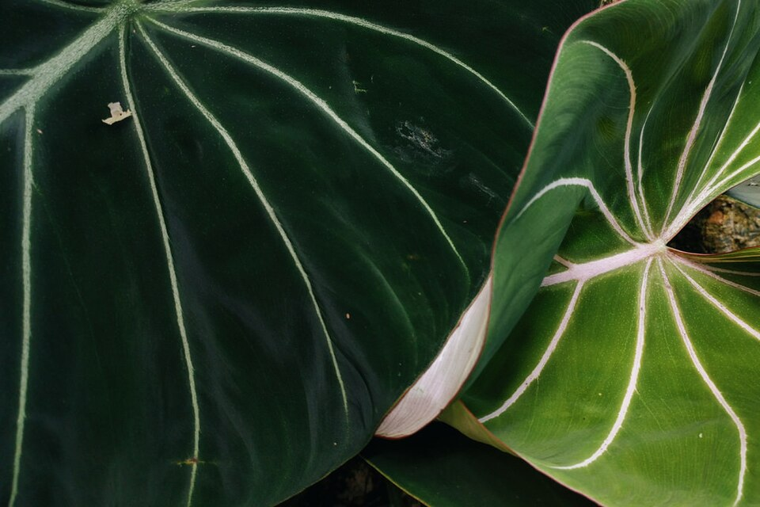
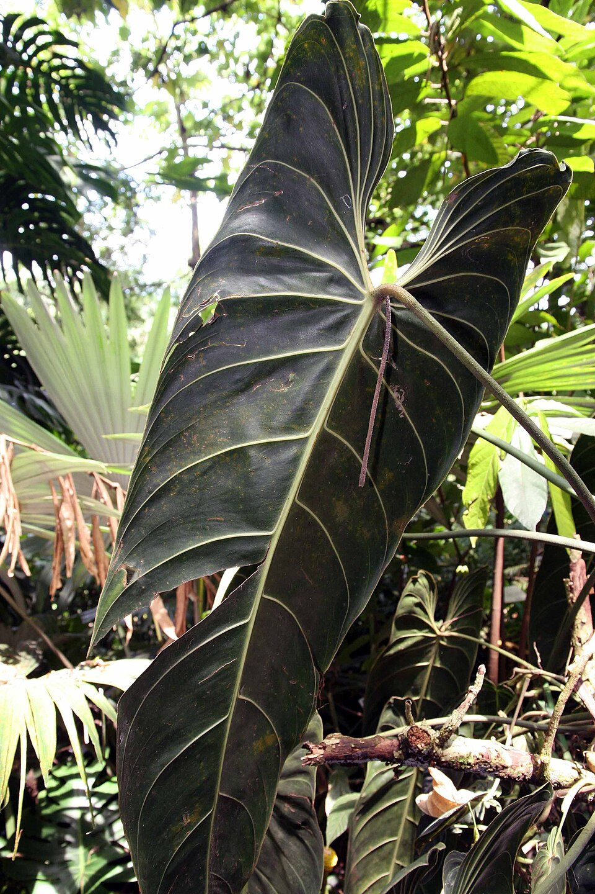
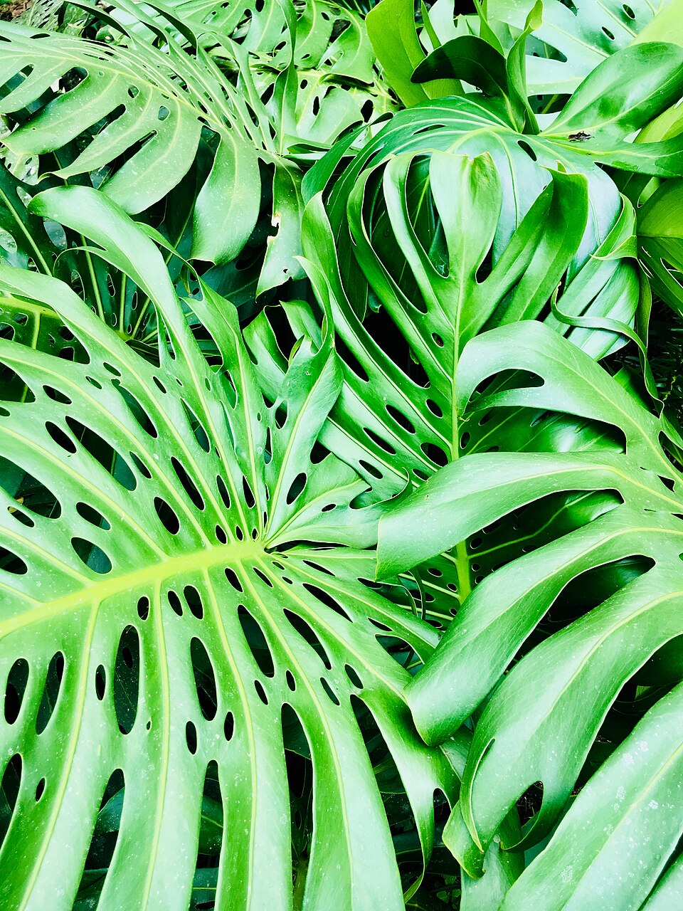

Nossa inspiração
Nossa inspiraçãoPlantas, vasos & pequenos rituais
Um universo
para cultivar.
Da próxima folha da sua coleção aos detalhes do cuidado.
Encontre o que faz sentido para o seu verde.

O extraordinário mora nos detalhes.Encontre seu próximo favorito
Explore por categoriaA seleção Paulo & Jana
Nossa loja.
Plantas para colecionar. Objetos para cuidar.
Nossa inspiração Formas generosas
Formas generosas Nervuras em destaque
Nervuras em destaque Textura escultural
Textura escultural Verde em grande escala
Verde em grande escala Geometria natural
Geometria natural
Para colecionar
Clássico tropicalNenhum produto por aqui.
Tente outro nome ou explore todas as categorias.
Catálogo de apresentação com imagens de referência. Modelos, tamanhos, valores e disponibilidade sob consulta.
Uma coleção que começa no olhar